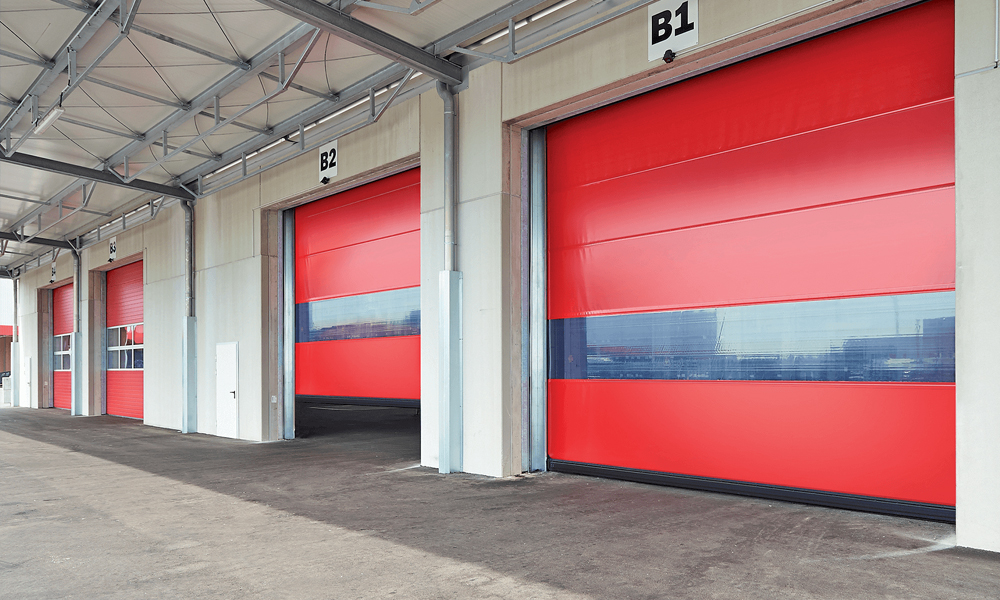
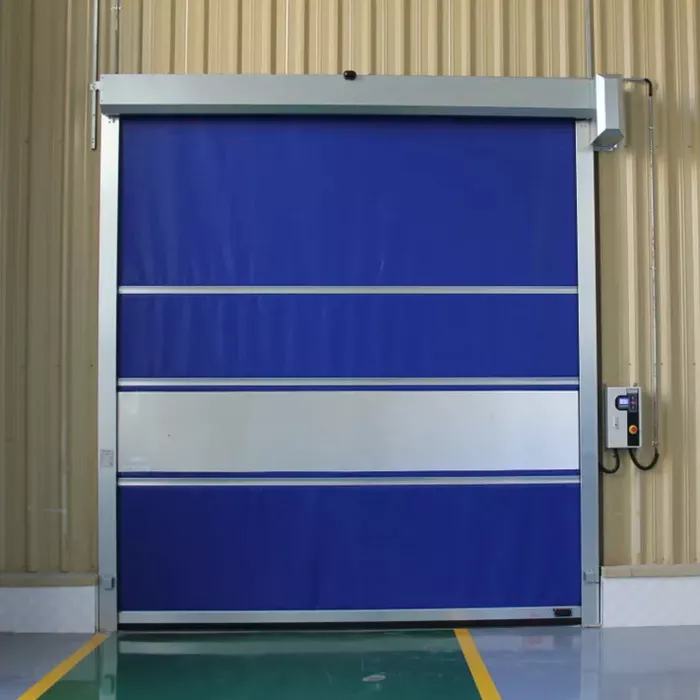

Bengal Rolling Shutters High-Speed Doors
Efficiency, Safety, and Durability
Overview
Bengal Rolling Shutters High-Speed Doors are designed to optimize traffic flow, improve room conditions, and save energy. Available in both vertically and horizontally opening transparent designs with flexible curtains, these doors can be combined with sectional doors, rolling shutters, and service-friendly spiral doors featuring smooth aluminum profiles. Equipped with a powerful Frequency Converter Control (FU) as standard, these doors ensure an extended lifespan of their working parts.
Key Features & Benefits
Enhanced Workflow and Energy Efficiency: Flexible high-speed doors help accelerate workflow while significantly reducing energy costs. Their rapid opening and closing speeds minimize heat loss, air leakage, and draughts, creating a more efficient and comfortable working environment.
Safety and Longevity: Standard features such as FU control, safety light grille, and SoftEdge bottom profile ensure smooth and safe operation along with a longer service life. These doors are designed to be low-maintenance, easy to install, and cost-effective, making them highly economical for everyday industrial and commercial use.

Comprehensive Range
- Flexible Curtain: The doors come with a flexible curtain that offers transparency and flexibility in operation.
- Combination Options: Available in combination with sectional doors and rolling shutters for versatile application.
- Spiral Doors: Service-friendly spiral doors with smooth aluminum profiles provide an additional option for high-speed door solutions.
- FU Control: The Frequency Converter Control (FU) standard equipment prolongs the lifespan of door components.
- Safety Features: Equipped with a safety light grille and SoftEdge bottom profile for enhanced safety.
- Cost-Efficient: Low-maintenance and easy to fit, these doors are cost-efficient and economical for everyday use.
Improved Work Environment
Bengal Rolling Shutters High-Speed Doors not only reduce energy losses but also improve the overall work environment by minimizing draughts and maintaining better indoor conditions. Their high performance in both internal and external applications ensures they meet the demands of various industrial settings.
Conclusion
Bengal Rolling Shutters High-Speed Doors are an ideal solution for optimizing traffic flow, saving energy, and enhancing safety in your facility. With their advanced features and robust construction, they offer reliable performance and cost efficiency, making them a valuable addition to any industrial or commercial environment.